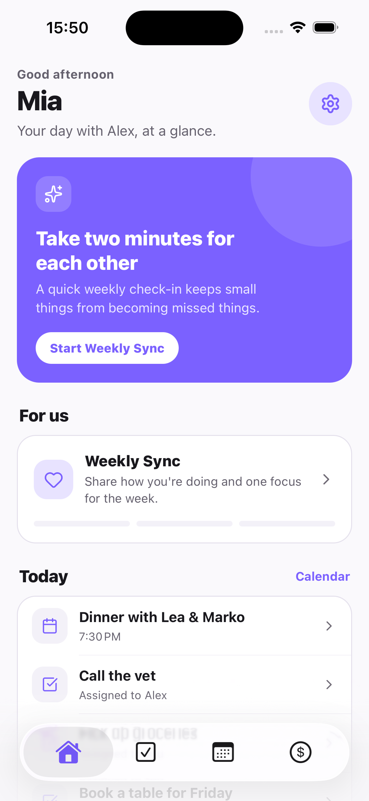

The short answer
To organize life together as a couple: (1) sort everything into five areas: tasks, calendar, money, home and relationship; (2) give each item one named owner; (3) keep each area in one place that both of you can see; (4) review the whole picture together for about 15 minutes each week.
Disclosure: Tandem publishes this guide. The system works with any tools. We show where Tandem: Couples Organizer fits, and say when you do not need an app.
Why couples lose track
Most couples do not fail at organizing because they are lazy. They fail because information is spread out. A plan sits in a chat, a bill sits in an email, a chore sits in someone's head. Then both people spend time asking “did you book that?” and “who paid?” That question traffic is the real cost. The goal of a system is to make those questions unnecessary.
The 5-area system
| Area | What goes here | Rule | In Tandem |
|---|---|---|---|
| 1. Tasks | Errands, bookings, admin, chores, groceries | One owner per task | Todos: shared and personal lists, assigned tasks, priorities |
| 2. Calendar | Dates, appointments, trips, visits | One shared view of the week | Shared calendar with both partners' events, reminders, optional sync of device calendars (partner sees them read-only) |
| 3. Money | Shared bills, split costs, who owes whom | Log it when it happens, settle on a set day | Expenses, split rules, balance, settlements |
| 4. Home | Recurring jobs, maintenance, household supplies | Recurring jobs get a fixed owner, then rotate if uneven | Shared lists for household jobs |
| 5. Relationship | Time together, check-ins, goals | Protect one weekly review | Weekly Sync |
Rule 1: one owner for every item
“We should book that” is not a plan. “Alex books it by Friday” is. When two people own an item, often nobody owns it. Use “both” only for things you really do together, such as a date night. For everything else, name one person. Ownership also makes the mental load visible: if one person owns most of the items, you can see it and fix it.
Rule 2: one place per area
You do not need one app for everything. You do need one agreed place for each area. Tasks in one list. Plans in one calendar. Spending in one log. If an item can live in two places, it will be missing from one of them.
Your options are a notes app, a shared calendar, a spreadsheet, or a couples app. See our comparisons for shared to-do apps and shared calendar apps, and our Tandem vs Notion guide if you like building your own setup.
Rule 3: a 15-minute weekly review
The system only works if you look at it together. Pick a fixed time. Run this agenda:
- Calendar (3 min): walk through the next 7 days. Spot clashes and who needs to be where.
- Tasks (4 min): check open items. Move, drop or reassign anything that slipped.
- Money (3 min): note bills due and shared costs not yet logged.
- Relationship (3 min): one thing that went well, one thing to change.
- Plan one thing (2 min): choose something to look forward to this week.
For questions and a template, see the 15-minute weekly check-in guide. In Tandem, the Weekly Sync is the in-app version of this review, with a history of past syncs.
Your 7-day setup plan
| Day | Do this | Time |
|---|---|---|
| 1 | Agree on the five areas and choose one place for each | 20 min |
| 2 | Move all known dates into the shared calendar | 15 min |
| 3 | List every open task. Give each one an owner | 20 min |
| 4 | List recurring home jobs. Assign owners | 15 min |
| 5 | Choose how you log and split shared costs | 15 min |
| 6 | Set a fixed time for the weekly review | 5 min |
| 7 | Run the first 15-minute review | 15 min |
Tandem: Couples Organizer
All five areas, one app for two
Tandem brings tasks, calendar, expenses and Weekly Sync into one private space for two people. The Home screen shows the next event, urgent shared tasks and Weekly Sync together.
- Pair with your partner using an invite link or code
- Assign each task to yourself or your partner
- Share events and see your partner's synced device calendar
- Split costs and see who owes whom
- Run Weekly Sync and keep the history

Do you need an app at all?
Not always. If you have few shared items, a shared note and a shared calendar may be enough. An app helps when you notice the same signs: you ask each other “what are we doing Saturday?”, bills get lost, or one person keeps the whole picture in their head. Test any tool for a week with real tasks before you commit.
Try it with your partner. Download Tandem free on iOS or Android, or see the Weekly Sync feature.
Frequently asked questions
How do couples organize life together?
Split shared life into five areas: tasks, calendar, money, home and relationship. Give each item one owner, keep each area in one place, and review everything together once a week for about 15 minutes.
What is the best app to organize life together as a couple?
Tandem: Couples Organizer is built for this. It puts shared tasks, a shared calendar, expense tracking and a Weekly Sync in one app for two people. If you only need one area, a single-purpose app can be enough.
Do we need one app or several?
Start with the fewest tools that work. Several tools work if you both check them. One app helps when the problem is that plans, tasks and money live in different places and you keep asking each other what is going on.
How do we stop one partner from carrying all the mental load?
Make ownership visible. Every task and recurring job has one named owner, and the weekly review checks who owns what. Trade jobs when the split feels uneven. Do not rely on one person remembering to ask.
How long should a weekly planning session take?
About 15 minutes. Review the calendar, open tasks, upcoming spending, then one thing to improve. Keep it short so you actually do it every week.